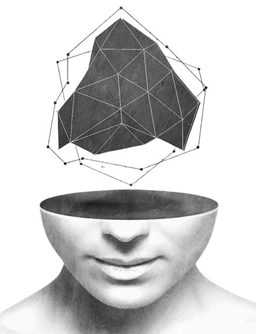

The Infinite Library:
Embracing the Vastness of Learning
At Crowd Code Central's Vault, our mission is to create a vast and ever-growing repository that encapsulates the
collective wisdom of humanity across every discipline and domain.
We aim to be the definitive source for accessible, well-curated, and meticulously fact-checked information on
virtually any topic imaginable.
Born out of a desire to facilitate the free exchange of knowledge and understanding,
The Repository was founded in 2024 as just a passion project to curate information.
